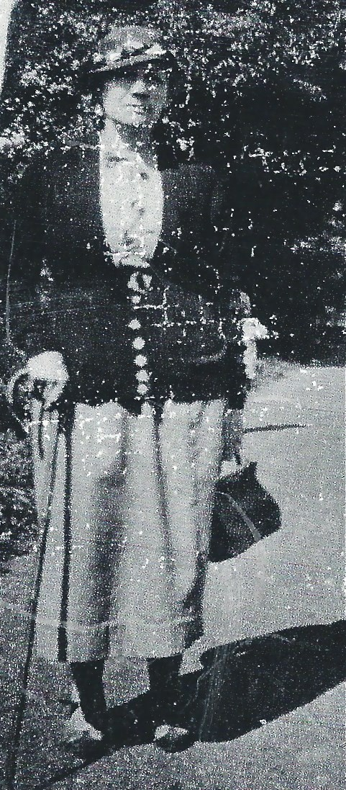
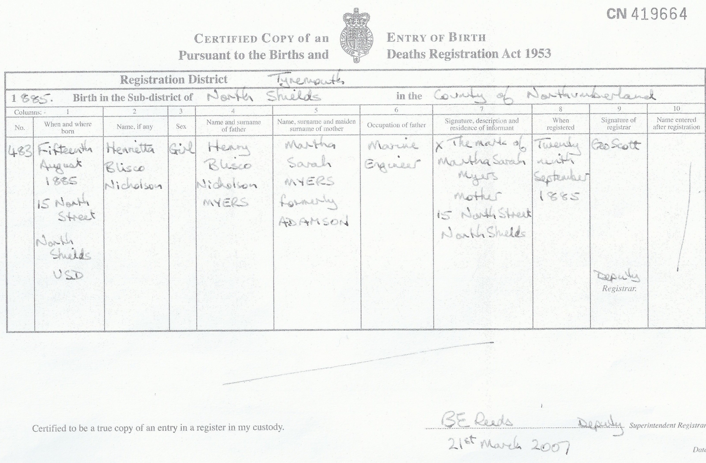
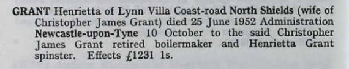
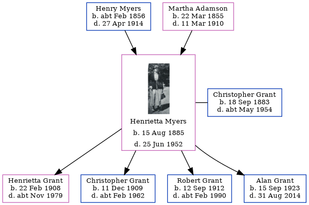

Henrietta Briscoe Nicholson Grant (née Myers) 1885 - 1952
[ Home ] | [ Calendar ] | [ Surnames Index ] | [ Errors ] | [ Family History ]The child of Henry Myers (a steamboat man) and Martha Adamson, Henrietta Myers was born in North Shields, Tyne and Wear, England on 15 Aug 18851,2,3,4,5 and married Christopher Grant (a ships boilermaker & plater with whom she had 4 children: Henrietta Briscoe Nicholson, Christopher James, Robert Myers and Alan) in Tynemouth, Tyne and Wear, England around Aug 19067.
During her life, she was living at 16 Appleby Street in North Shields on 5 Apr 18911 - less than a mile from her sister Martha Sarah Nicholson and mother Martha Adamson who were living at 16 Appleby Street, Chirton, Tyne and Wear; at 48 Appleby Street in North Shields on 31 Mar 19012 - less than a mile from her sister Martha Sarah Nicholson who was living at 48 Appleby Street, Chirton, Tyne and Wear; at 96 Elsdon Street in Tynemouth on 2 Apr 19118 - less than a mile from her sister Martha Sarah Nicholson who was living at 40 Burdon Main Row in Tynemouth and her father Henry Briscoe Nicholson who was living at 96 Elsdon Street in Tynemouth -; and at 4 Coast Road in Tynemouth on 29 Sept 19399.
She died on 25 Jun 1952 in Tynemouth6.
Parents
- Henry Briscoe Nicholson was born c. Feb 1856
- Martha Sarah was born on 22 Mar 1855
Children
- Henrietta Briscoe Nicholson was born on 22 Feb 1908
- Christopher James was born on 11 Dec 1909
- Robert Myers was born on 12 Sept 1912
- Alan was born on 15 Sept 1923
Citations
- 1891 England, Wales & Scotland Census - Findmypast (was age 5 and the daughter of the head of the household)
- 1901 England, Wales & Scotland Census - Findmypast (was age 15 and the daughter of the head of the household)
- llections from: United Kingdom, England;
- Volume: 10B; Page: 185; Line Number: 259; Record set: England & Wales Births 1837-2006; Subcategory: Civil Births; Category: Birth, Marriage & Death (Parish Registers); Collections from: United Kingdom, England;
- ingdom, England;
- Volume: 1B; Page: 468; Line number: 105; Record set: England & Wales Deaths 1837-2007; Subcategory: Civil Deaths & Burials; Category: Birth, Marriage & Death (Parish Registers); Collections from: United Kingdom, England; Volume: 1B; Page: 468; Line number: 105; Record set: England & Wales Deaths 1837-2007; Subcategory: Civil Deaths & Burials; Category: Birth, Marriage & Death (Parish Registers); Collections from: United Kingdom, England;
- England & Wales Marriages 1837-2005 - Findmypast
- 1911 Census for England & Wales - Findmypast (was age 25 and the wife of the head of the household)
- 1939 Register - Findmypast (was the wife of the head of the household)
Media
Henrietta Briscoe Nicholson Myers

Henrietta Briscoe Nicholson Myers - Birth Certific

Henrietta Grant - Probate

England & Wales births 1837-2006 - BMD/B/1885/3/AZ/000397/259
England & Wales marriages 1837-2005 - BMD/M/1906/3/AZ/000287/187
1911 Census for England & Wales - GBC/1911/RG14/30762/0399/2
1939 Register - TNA/R39/2952/2952C/014/19
England & Wales deaths 1837-2007 Transcription - BMD-D-1952-2-AZ-000349-105
Family Trees - FMP/1249063097
Family Tree
Map
Generated by ged2site. Last updated on Jul 3, 2024
Known Issues
Can't find relationship with the home person